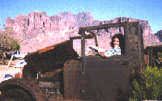

it all begins with a driving desire for justice which turns into an untamable vision that seems manageable and practical yet intangible. before you lung and wreck a decent life (yours), consider some thots & tactics from one who lives la radical revolución que algún día se le ocurrió:
• the odds are against you. most likely, you don’t have the resources, support, history, or allies that are vital to your plan of acción.
• no matter how pc it is to dig the latina lesbian nation, “they” could really give a shit. “they” care most deeply about “their” advancement, not about you or your agenda or your nada, mi’ja. tokenism is still close to home.• about those nice anti-racists–if they walk their talk and you don’t feel like una decoración on their lapel, use them.
• when you’re trying to get into on of those we’ve-never-seen-a-latina-lesbian-in-this-environment types of situations, expect to do intense legwork that will pave the way for others in the future, but maybe not just yet for you.• use that grubby white-racist guilt to your advantage.
• if you’re working with your latina lesbian familia, don’t expect support.• there really are evil people and some of them are in your community. don’t let the greedy, dishonest, lying, classist backstabbing dirty political players alienate you from your dream or from the people who share it.
• for all your merits, you’re just una exagerada, a chronic malcontent, a trouble-making escandalosa, an obnoxious gravel in everyone’s shoe. the world would be so much smoother if you’d just shut up.• regardless of how grand your scheme is, it will most likely mean that you’ll end up waiting in line at kinko’s or office depot to photocopy your earth-shaking documents. brace yourself–they could be out of that “solar yellow” paper you envisioned.
• the most humiliating experience of all: selecting the appropriate stamp at the post office. if you hate u.s. flags, wooden ducks, males, buildings & “love” stamps, be prepared to suffer. DO NOT say “fuck” within hearing range of your local postal clerks.
• oh yeah, a few possible side effects: blurry vision, sleep deprivation, extreme poverty, messy house & burnt food, bureaucratic frustrations, diminished sex life, continual injustice, deteriorating health & no social life to speak of. it’s all so grand!
• keep your vision in check. it may all be worth it.
*(una escandalosa who’s been jailed & hailed & ostracized & tokenized to no avail)*
© 1995 Tatiana de la Tierra
"A Latina Lesbian Activist's Survival Guide." Originally appeared in Conmocion, 3, 1995, 15